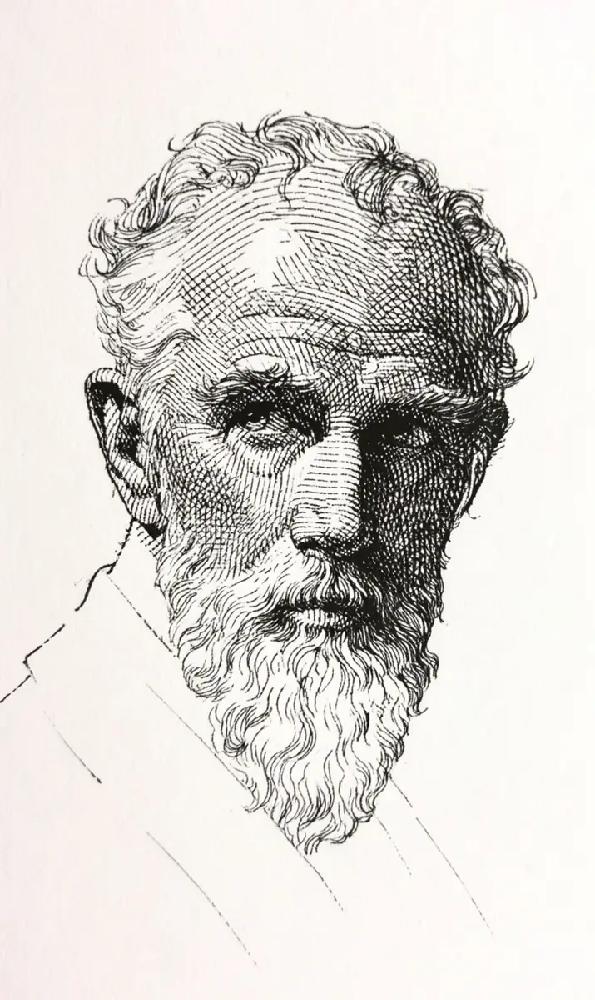

신부가 들어오기도 전에 만복은 벌써 세 번이나 수염을 붙잡혔다.
[Before the bride even came in, Manbok had had his beard grabbed three times.]
“방금 떨렸죠? 나 봤어요.”
[”It trembled just now, didn’t it. I saw it.”]
“에어컨입니다.”
[”That is the air conditioner.”]
아주머니는 물러서지 않았다.
[The woman did not back off.]
국수 한 가닥을 집어 수염 앞에 흔들었다.
[She picked up a noodle and waved it in front of the beard.]
개한테 하듯이 노인의 턱을 대하는 사람이 올해만 네 명째였다.
[She was the fourth person this year to treat an old man’s chin the way you treat a dog.]
만복의 무릎은 비가 올 것을 알았다.
[Manbok’s knees knew when rain was coming.]
만복의 수염은 배신이 올 것을 알았다.
[Manbok’s beard knew when a betrayal was coming.]
그래서 마을 사람들은 그의 몸을 부위마다 다른 값으로 샀다.
[So the villagers bought his body at a different price for each part.]
비는 하늘만 봐도 알 수 있으니 무릎은 쌌다.
[Rain you can tell just by looking at the sky, so the knees were cheap.]
배신은 하늘에 보이지 않으니 수염은 비쌌다.
[Betrayal you cannot see in the sky, so the beard was expensive.]
잔칫집에서는 국수 한 그릇과 봉투를 함께 상석에 놓았다.
[At a wedding house they put a bowl of noodles and an envelope together at the head seat.]
뒷줄에서는 하객들이 돈을 걸고 있었다.
[In the back rows the guests were placing bets.]
이 결혼이 삼 년을 갈지 오 년을 갈지가 걸린 문제였다.
[The question at stake was whether this marriage would last three years or five.]
어물전 김씨는 이혼 쪽에 돈을 걸어 놓고도 신부 어머니 손을 잡고 축하한다며 울었다.
[Kim from the fish stall had money on divorce and still held the bride’s mother’s hand, weeping congratulations.]
사흘 전 밤, 재우가 신발도 안 벗고 마루에 올라섰다.
[Three nights earlier, Jaeu had climbed onto his floor without taking his shoes off.]
청년이 문지방을 넘자마자 수염이 사방으로 뻗쳤다.
[The moment the young man crossed the threshold, the beard flew out in every direction.]
재우는 놀라지 않았다.
[Jaeu was not surprised.]
봉투부터 내려놓았다.
[He set down an envelope first.]
“어르신, 그날은 아무 말씀도 마십시오.”
[”Sir, on the day, say nothing.”]
만복은 무엇을 덮어 달라는 것인지 묻지 않았다.
[Manbok did not ask what it was he was covering up.]
청년이 나가고 나서, 만복은 가위로 성난 수염을 한 줌 잘라 주머니에 넣었다.
[After the young man left, Manbok cut a fistful of the angry beard with his scissors and put it in his pocket.]
왜 그랬는지는 그도 몰랐다.
[He did not know himself why he did it.]
주례가 성혼을 선언하는 동안 만복은 저고리 안에 손을 넣고 있었다.
[While the officiant declared the marriage, Manbok kept his hand inside his jacket.]
남은 수염 한 줌을 주먹으로 꽉 쥐고 있었다.
[He was gripping what was left of the beard tight in his fist.]
떨리면 눌러서 아무도 못 보게 할 생각이었다.
[If it trembled, he meant to press it down so nobody would see.]
그런데 주먹 속의 수염은 처음부터 조용했다.
[But the beard inside his fist was quiet from the start.]
그날 아침에도 가위는 잘라 낼 것을 찾지 못했다.
[That morning, too, the scissors had found nothing to cut.]
사십 년 동안 아흐레마다 자르던 수염이 하루도 자라지 않은 것이다.
[The beard he had trimmed every nine days for forty years had not grown a single day’s worth.]
수염이 조용한 이유를 만복은 그제야 알았다.
[Only then did Manbok understand why the beard was quiet.]
배신은 상석에 앉아 불은 국수를 먹고 있었다.
[The betrayal was sitting at the head seat, eating soggy noodles.]
순영이 잔을 채우며 물었다.
[Sunyeong filled his glass and asked.]
“어르신, 저희는 괜찮은 거지요?”
[”Sir, we are going to be all right, aren’t we?”]
만복은 괜찮다고 말하려고 입을 열었다.
[Manbok opened his mouth to say yes.]
그 대신 주머니에 손을 넣었다.
[Instead, he put his hand in his pocket.]
사흘 전에 잘라 둔 수염을 꺼내 천장으로 던졌다.
[He took out the beard he had cut three nights before and threw it at the ceiling.]
털은 떨어지지 않았다.
[The hairs did not fall.]
공중에서 한 덩어리로 뭉치더니 신랑 쪽으로 날아갔다.
[They gathered in the air into a single mass and flew toward the groom.]
손 모양이었다.
[It had the shape of a hand.]
그 손이 재우의 뺨을 소리 나게 후려쳤다.
[That hand slapped Jaeu across the cheek, hard enough to hear.]
재우는 의자째 넘어졌다.
[Jaeu went over, chair and all.]
아무도 무슨 뜻이냐고 묻지 않았다.
[Nobody asked what it meant.]
김씨가 제일 먼저 일어나 판돈을 다시 걸겠다고 소리쳤다.
[Kim was the first on his feet, shouting that he wanted to change his bet.]
만복은 봉투를 신부 앞에 내려놓고 식장을 나섰다.
[Manbok set the envelope down in front of the bride and left the hall.]
문밖에서 비가 쏟아졌고, 무릎이 사십 년 만에 처음으로 아프지 않았다.
[Outside the rain came down, and for the first time in forty years his knees did not hurt.]